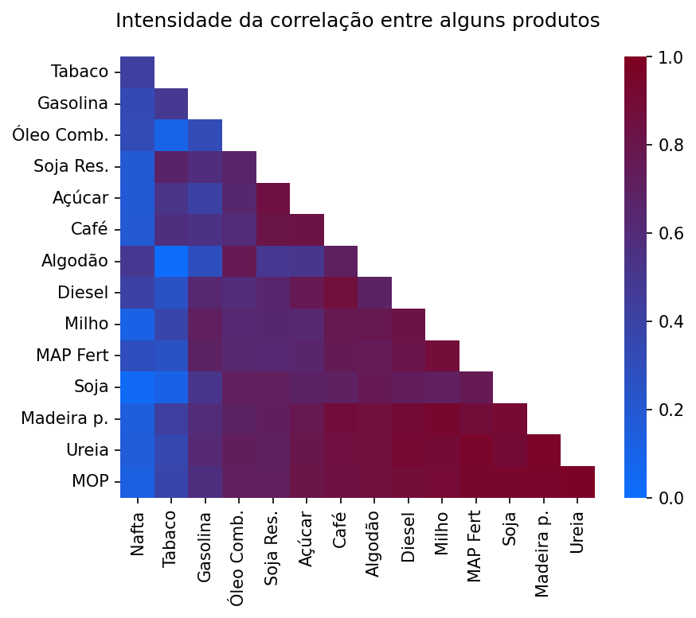

Teste online
O comércio de outros produtos pode influenciar o que se deseja prever.

Correlação não significa causa e efeito
Produtos podem apresentar comportamentos semelhantes sem que um influencie o outro. Por isso, a QI não incorpora automaticamente às previsões as correlações encontradas. Nas previsões multifatoriais, são selecionadas relações com fundamento técnico, coerência temporal e contribuição confirmada nos testes retrospectivos.